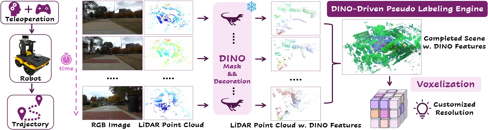
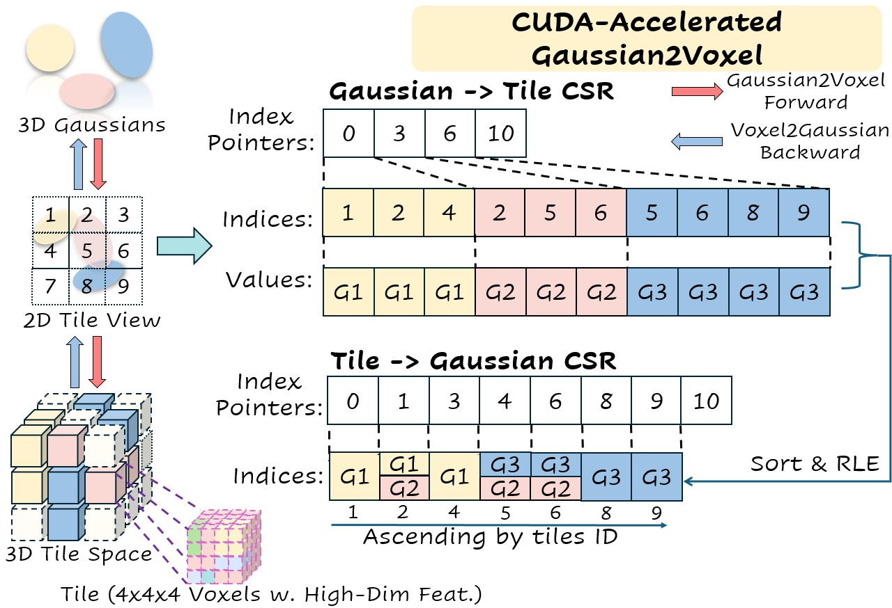
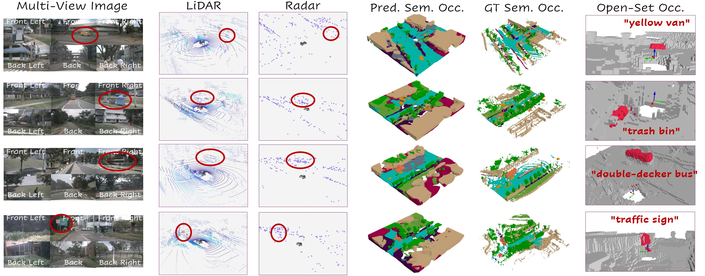
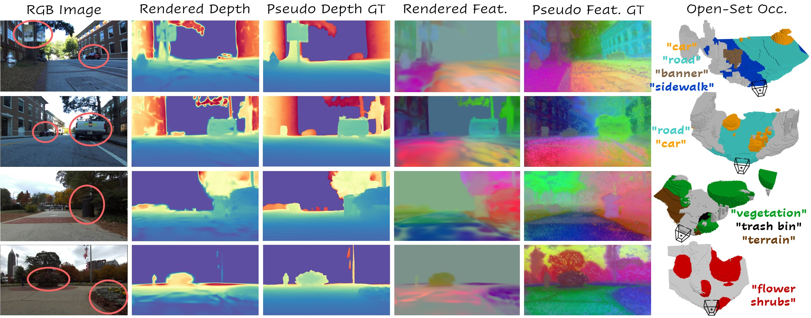

We teleoperate our UGV through urban scenarios to collect paired image and point cloud sequences along with trajectories from onboard camera and LiDAR. LiDAR points are then projected to image and decorated with pixel-wise DINO features. These points are aggregated and voxelized at a customized resolution to be 3D pseudo labels.

Dual-CSR Structure for CUDA-Accelerated Gaussian2Voxel. Gaussian-to-Tile CSR: index pointers store tile offsets per Gaussian, indices record tile IDs, and values store Gaussian IDs. Tile-to-Gaussian CSR: index pointers store Gaussian offsets per tile, and indices record Gaussian IDs obtained by sorting and run-length encoding (RLE) tile-Gaussian pairs.



@article{zhao2025shelfgaussian,
author = {Zhao, Lingjun and Luo, Yandong and Hays, James and Gan, Lu},
title = {ShelfGaussian: Shelf-Supervised Open-Vocabulary Gaussian-based 3D Scene Understanding},
year = {2025},
note = {Preprint available soon on arXiv.}
}